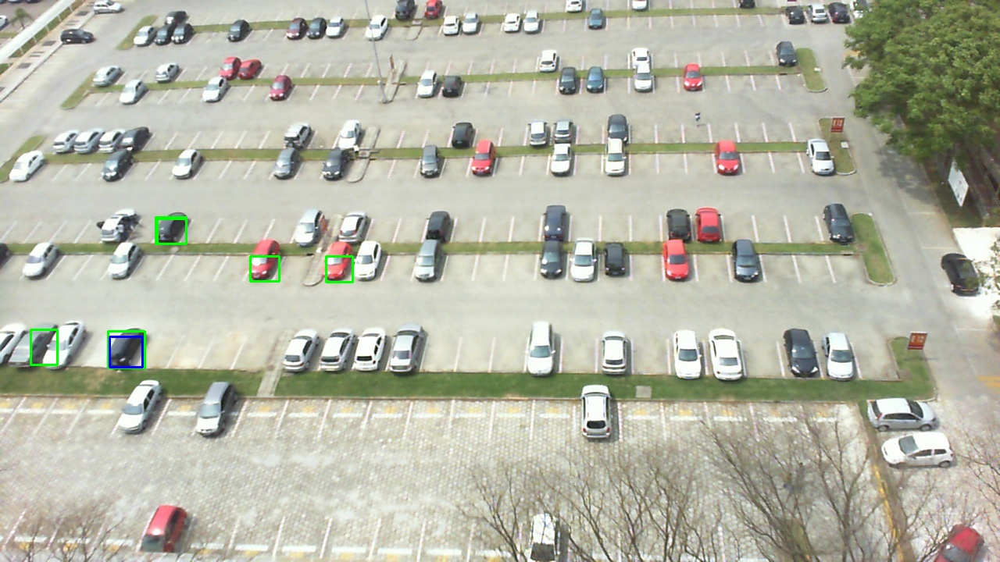
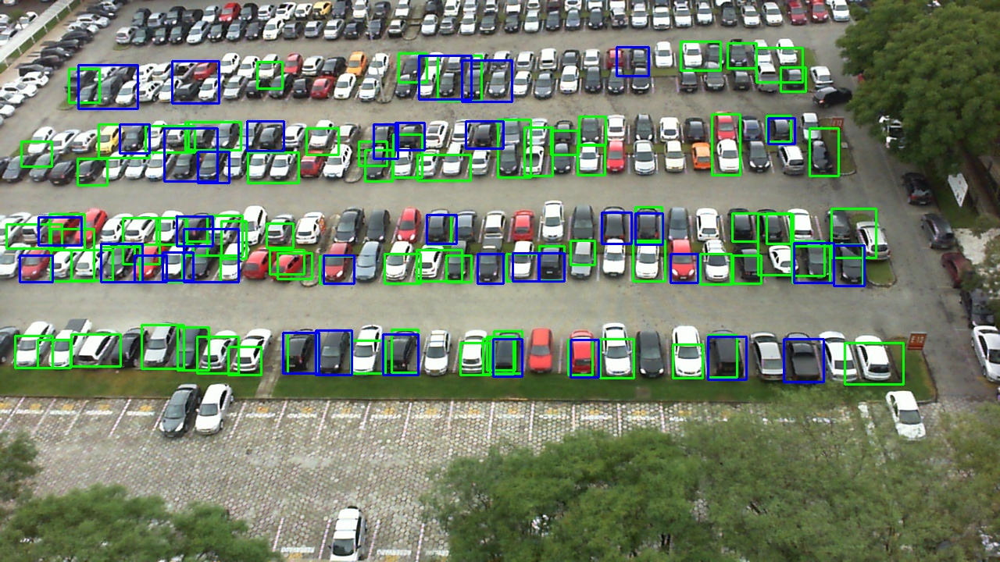
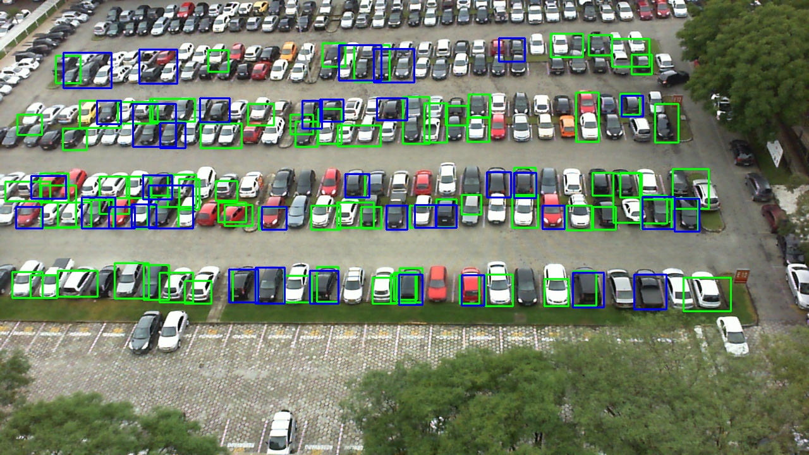

3. Mérföldkő
Parkolóhelyek detektálása
Dokumentáció:
1. A ki indulásul két képet vettem alapul. Az egyik kép az üres parkolóról készült, a másik kép az autókkal teli parkolóról.


2. Kezdetben az egész parkolót próbáltam vizsgálni. Azonban a kezdeti sikertelenségek után csak a kép egy adott részét,
a növényzet által kevésbe takart parkoló részeket próbáltam vizsgálni. Létrehoztam egy egéresemény kezelő függvényt, melynek segítségével kitudtam jelölni a vizsgálni kívánt részeket.
Az elmentett pixel koordinátákat a maszk elkészítéséhez használtam. Az eredmény a következő két képen látható:
3. A következő lépésben a két képet a „subtract” OpenCV függvény felhasználásával kivontam egymásból,
így egy olyan képet kaptam, amin a két kép különbsége láthatók, vagyis az autók. A kapott képet a „GaussianBlur” függvénnyel simítottam, majd a Cany éldetektort alkalmazva a következő képet kaptam:
4. A kapott képen a HoughLinesP detektort alkalmaztam. A következő két kép ennek eredményét mutatja be a maszkolt és a teljes képen:
Ezzel az üres parkolóhelyeket szerettem volna kijelölni, de sajnos nem jártam sikerrel.
5. Utolsó lépésként kettő küszöbölést (egy a világos, egy pedig a sötét autók miatt) követően kontúrokat kerestem a képeken.
A kontúrok köré téglalapokat rajzoltam. Csak azokat a kontúrokat rajzoltattam ki, amelyek egy bizonyos mérettartományban voltak,
ezzel eldobva az autóknál kisebb és nagyobb kontúrokat.
Eredmények
A programot mindegyik, az adatbázisban szereplő, parkolón lefuttattam. Néhány eredmény a fent vizsgált parkolóra::

 

Néhány eredmény két másik, az adatbázisban szereplő parkolóra:
Szemmel látható, hogy a program működését az időjárás miatti látásiviszonyok nagyon befolyásolják. Még szembe tűnőbb az eredmény, ha egy teljesen másik parkolón futtatjuk le a programunkat.